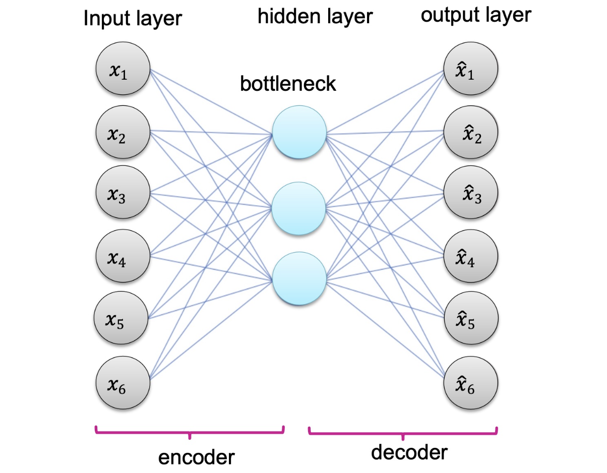
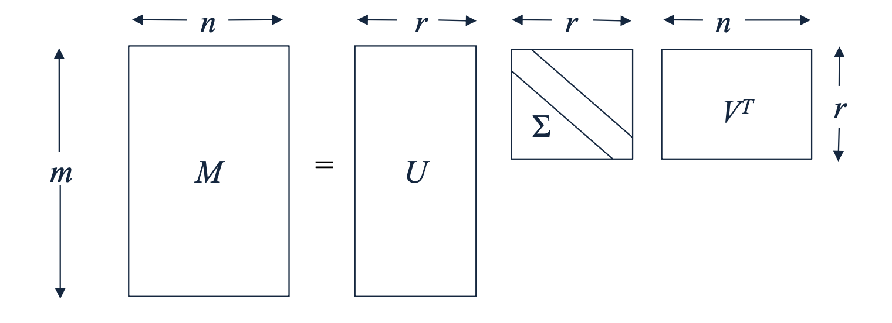
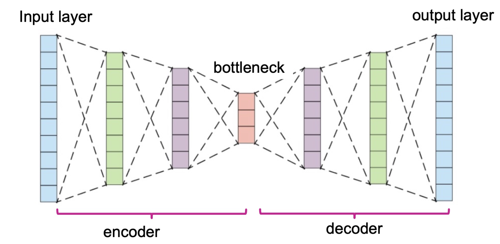

1. Introduction: Word2Vec에서 오토인코더로
이전 포스트들에서 우리는 데이터를 저차원의 벡터로 변환하는 임베딩(Embedding)의 개념과, 이를 자연어에 적용하여 주변 문맥을 예측하는 Word2Vec에 대해 알아보았습니다. 흥미롭게도 Word2Vec의 구조를 거시적인 관점에서 바라보면, 오늘 다룰 주제인 오토인코더(Autoencoder)의 구조와 매우 닮아 있습니다.
Word2Vec이 ’중심 단어로 주변 단어를 예측’하는 프록시 태스크(Proxy Task)를 통해 임베딩을 학습했다면, 오토인코더는 ‘입력된 데이터 그 자신을 똑같이 복원(Reconstruct)’하는 태스크를 통해 데이터의 가장 본질적인 특징을 학습합니다. 딥러닝에서 표현 학습(Representation Learning)을 수행하는 가장 기본적이면서도 강력한 범용 신경망 구조가 바로 오토인코더입니다.
2. 오토인코더의 핵심 구조: 인코더와 디코더
- 오토인코더는 크게 두 가지 핵심 함수(네트워크)로 구성됩니다.
- 인코더 (Encoder) \(f\):
- 고차원의 원본 데이터를 저차원의 임베딩 공간으로 압축하는 함수입니다. 원본 데이터의 차원을 \(M\), 임베딩 공간의 차원을 \(D\)라고 할 때, 인코더 \(f\)는 \(M\) 차원의 입력을 받아 \(D\) 차원의 벡터로 변환합니다. 이때 반드시 \(D \ll M\) (임베딩 차원이 원본 차원보다 훨씬 작음)을 만족해야 합니다.
- 디코더 (Decoder) \(g\):
- 압축된 임베딩 벡터를 다시 원본 데이터의 차원으로 복원하는 함수입니다. 즉, \(D\) 차원의 벡터 \(f(x)\)를 입력받아 다시 원래의 \(M\) 차원 공간으로 되돌리는 역할을 수행합니다.
- 이 두 구조가 결합되어 원본 입력 \(x\)가 네트워크를 통과하면 최종적으로 출력 \(\hat{x} = g(f(x))\)가 도출됩니다.
3. 목적 함수: 재구성 오차 (Reconstruction Error) 최소화
오토인코더의 궁극적인 목표는 입력 데이터 \(x\)와 복원된 데이터 \(g(f(x))\) 사이의 차이를 최소화하는 최적의 함수 \(f\)와 \(g\)를 찾는 것입니다.
이때 사용되는 목적 함수(Objective function)를 재구성 오차(Reconstruction Error)라고 부르며, 수식으로는 다음과 같이 입력과 출력 간의 L2 노름(유클리디안 거리)으로 정의됩니다.
\[\mathcal{L}(x) = ||g(f(x)) - x||_2\]
참고: 다루는 데이터의 성격이나 확률적 가정에 따라 L2 거리 외에도 교차 엔트로피(Cross-Entropy) 등 다양한 목적 함수 변형이 존재할 수 있습니다.
의미 (Meaning):
- 오토인코더가 완벽에 가깝게 \(x\)를 재구성할 수 있다는 것은, 압축된 벡터 \(f(x)\) 내부에 원본 데이터 \(x\)를 묘사하는 가장 핵심적이고 필수적인 정보(Essential information)가 모두 보존되어 있음을 뜻합니다. 따라서 학습이 완료된 후의 \(f(x)\)는 매우 효과적이고 밀집된 데이터의 ’표현(Embedding)’으로 간주하여 다양한 하위 태스크(분류, 군집화 등)에 활용할 수 있습니다.
4. 아키텍처 비교: 오토인코더 vs. Word2Vec
- 가장 단순한 형태의 선형 오토인코더를 가정해 보겠습니다. 인코더와 디코더를 단일 행렬 곱셈으로 정의하면 다음과 같습니다.
- \(f(x) = x^\top W\)
- \(g(v) = v^\top W'\)
- 이 수식은 이전 포스트에서 살펴본 Word2Vec의 은닉층-출력층 계산 방식과 거의 유사합니다. 하지만 명확한 두 가지 차이점이 존재합니다.
- 입력 벡터의 성질: Word2Vec에서는 입력 \(x\)가 0과 1로만 이루어진 극도로 희소한 원-핫 벡터(One-hot vector)였습니다. 반면, 범용적인 오토인코더에서 \(x\)는 이미지 픽셀 값이나 연속적인 수치 등을 포함하는 일반적인 밀집 벡터(Dense/Continuous vector)일 수 있습니다.
- 출력층의 활성화 함수: Word2Vec은 주변 단어의 ’확률 분포’를 구하기 위해 출력 \(g(f(x))\)에 소프트맥스(Softmax) 함수를 적용했습니다. 하지만 오토인코더는 원본 데이터 수치 자체를 복원하는 것이 목적이므로, 복원 단계에서 소프트맥스를 강제하지 않습니다.

병목(Bottleneck) 구간의 중요성
- 위 그림에서 중심부에 위치한 은닉층을 병목(Bottleneck)이라고 부릅니다. 이 병목 구간의 존재가 오토인코더의 정체성 그 자체입니다. 만약 임베딩 차원 \(D\)가 원본 차원 \(M\)보다 크거나 같다면 (\(D \ge M\)), 신경망은 데이터의 유의미한 패턴을 추출하는 대신 단순히 입력을 그대로 출력으로 복사하는 항등 함수(Identity mapping)를 ‘암기(Memorize)’해 버릴 위험이 큽니다. 차원을 강제로 좁히는 병목을 거쳐야만 네트워크가 데이터의 노이즈를 버리고 가장 중요한 기저 패턴(Latent core)만을 압축하여 학습하게 됩니다.
5. 특이값 분해(SVD)와의 수학적 연결고리
오토인코더의 철학은 전통적인 선형대수학의 차원 축소 기법인 특이값 분해(SVD, Singular Value Decomposition)와 매우 깊은 연관이 있습니다. 관찰해 보면 SVD와 (선형) 오토인코더는 사실상 동일한 목표를 향해 나아갑니다.
행렬 \(M\)에 대한 Truncated SVD(Low-rank approximation)는 재구성 오차를 최소화하는 근사 행렬 \(U \Sigma V^\top\)를 도출합니다. 완전히 학습된 선형 오토인코더 역시 재구성 오차를 최소화하는 가중치 행렬 \(W\)와 \(W'\)를 제공합니다.

- 수학적으로 이 둘은 다음과 같은 대응 관계를 갖습니다.
- \(V \in \mathbb{R}^{n \times r}\) (열-개념 행렬, Column-to-concept matrix)는 오토인코더의 인코더 가중치 \(W\)에 대응됩니다.
- \(U^\top \in \mathbb{R}^{r \times m}\) (개념-행 행렬, Concept-to-row matrix)는 오토인코더의 디코더 가중치 \(W'\)에 대응됩니다.
- 즉, 활성화 함수가 없는 얕은(Shallow) 구조의 오토인코더를 학습시키는 것은 데이터 행렬의 주요 주성분(Principal Components)이나 특이값 분해 공간을 찾아내는 것과 본질적으로 같습니다.
6. 선형성을 넘어: 딥러닝 기반 오토인코더 (Deep Autoencoders)
SVD는 강력하지만 본질적으로 선형적(Linear)인 차원 축소 기법이라는 한계를 지닙니다. 현실의 데이터는 비선형적인 매니폴드(Manifold) 상에 존재하는 경우가 많습니다.
오토인코더가 SVD의 성능을 압도할 수 있는 이유는 바로 비선형성(Nonlinearity)을 활용할 수 있기 때문입니다.
- 다층 구조 (Multiple Layers): 인코더 \(f\)와 디코더 \(g\)를 단일 행렬 곱이 아닌, 여러 개의 은닉층이 겹겹이 쌓인 깊은 신경망(Deep Neural Networks)으로 설계합니다.
- 활성화 함수 (Activation Function): 각 층의 출력, 특히 병목 구간의 출력에 ReLU, Sigmoid, Tanh와 같은 비선형 활성화 함수를 적용합니다.

- 이러한 깊은 구조와 비선형성이 결합함으로써, 딥 오토인코더는 데이터 간의 단순 선형 상관관계를 넘어 복잡하게 뒤틀려 있는 데이터의 심층적인 기저 표현까지 유연하게 포착할 수 있는 강력한 표현 학습기가 됩니다.